Unreal Engine 5.8 — Từ Starter đến Advanced
Khóa học tổng hợp từ chính bộ Unreal Engine 5.8 Documentation chính chủ của Epic Games (mirror local kèm ảnh gốc). Nội dung tiếng Việt, thuật ngữ giữ nguyên tiếng Anh — đúng cách dev game chuyên nghiệp đọc docs. Mỗi chương có ảnh minh họa thật từ tài liệu, bài tập thực hành và link tham chiếu tới trang docs đầy đủ.
unreal-engine-5.8-docs/site/) — mở bằng python serve.py hoặc xem trực tiếp file HTML. Ảnh trong khóa là ảnh gốc từ tài liệu Epic.
Chương 1 Unreal Engine 5.8 — Tổng quan & Cài đặt
Unreal Engine là gì, vì sao chọn nó, và thiết lập môi trường làm việc đầu tiên.
Unreal Engine là gì?
Unreal Engine (UE) là game engine mã nguồn mở (source-available) của Epic Games, được dùng từ game AAA (Fortnite, Matrix Awakens) tới phim ảo hóa, kiến trúc, ô tô. Phiên bản 5.8 tiếp tục hoàn thiện bộ ba công nghệ biểu tượng của UE5: Nanite (geometry ảo hóa), Lumen (global illumination thời gian thực) và World Partition (world khổng lồ).
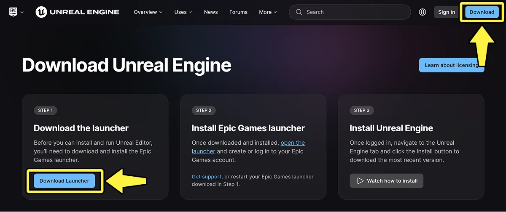
| Khái niệm | Giải thích |
|---|---|
| Epic Games Launcher | Ứng dụng quản lý: cài engine versions, project, Fab marketplace |
| Project | Một game/ứng dụng UE — chứa levels, assets, code, settings |
| Template | Dự án mẫu: First Person, Third Person, Top Down… có sẵn gameplay |
| Blueprint vs C++ | Hai cách lập trình: visual scripting (kéo thả) và code thật — dùng song song được |
Cấu hình máy & cài đặt
- Windows: Windows 10/11 64-bit, RAM 32 GB khuyến nghị (16 GB tối thiểu), GPU DirectX 12 với 8 GB VRAM (RTX càng tốt cho Lumen/Nanite), SSD còn trống ≥ 100 GB.
- macOS: macOS 13.5+, chip Apple Silicon hoặc Intel, Metal 2.
- Linux: Ubuntu 22.04+, Vulkan 1.2+ — thích hợp build từ source.
Cài qua Epic Games Launcher → Unreal Engine → Library → +, chọn 5.8.x. Sau đó cài các Components theo nhu cầu: Core Components (bắt buộc), Android Support, Linux Support, iOS Support…
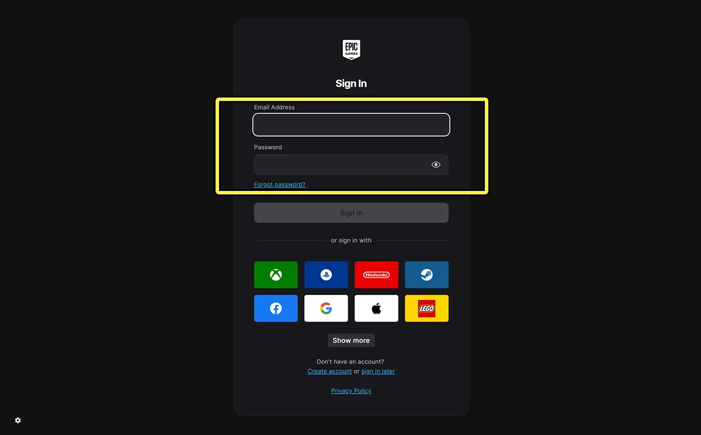
D:/UE/Projects/MyGame) — tránh lỗi import asset và build.
Project đầu tiên
Khởi động engine → Game category → template Third Person. Chọn:
- Blueprint hoặc C++ (C++ cần Visual Studio 2022 + workload "Game development with C++")
- Target platform: Maximum Quality (PC) / Scalable 3D-2D (mobile)
- Starter Content: tick để có sẵn assets luyện tập
- Raytracing: để trừ khi GPU mạnh
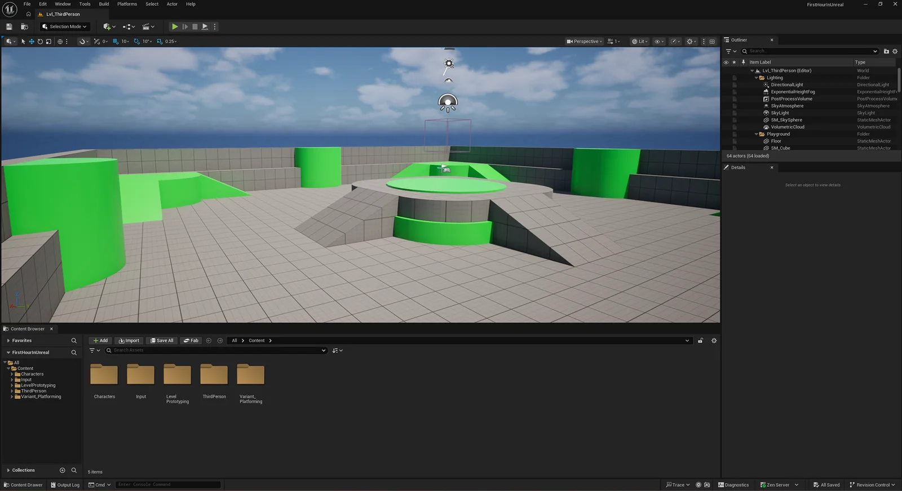
Nhấn Create — UE sẽ mở editor với một level có character điều khiển được: bấm Play (hoặc Alt+P) và chạy quanh map bằng WASD + chuột.
Cài UE 5.8, tạo project Third Person Blueprint có Starter Content, đặt tên UECourse_FirstGame. Bấm Play, chạy nhặt 1 đồng coin trong map, chụp màn hình kết quả.
Gợi ý
Content/ThirdPerson/Blueprints/BP_ThirdPersonCharacter trong Content Browser.📚 Xem docs đầy đủ: Install Unreal Engine · Module 1: Install UE and Create Your First Project · Your First Hour in Unreal Engine
Chương 2 Unreal Editor Interface
Làm chủ các panel của editor — nơi bạn sẽ sống suốt mấy năm tới.
Layout tổng quan
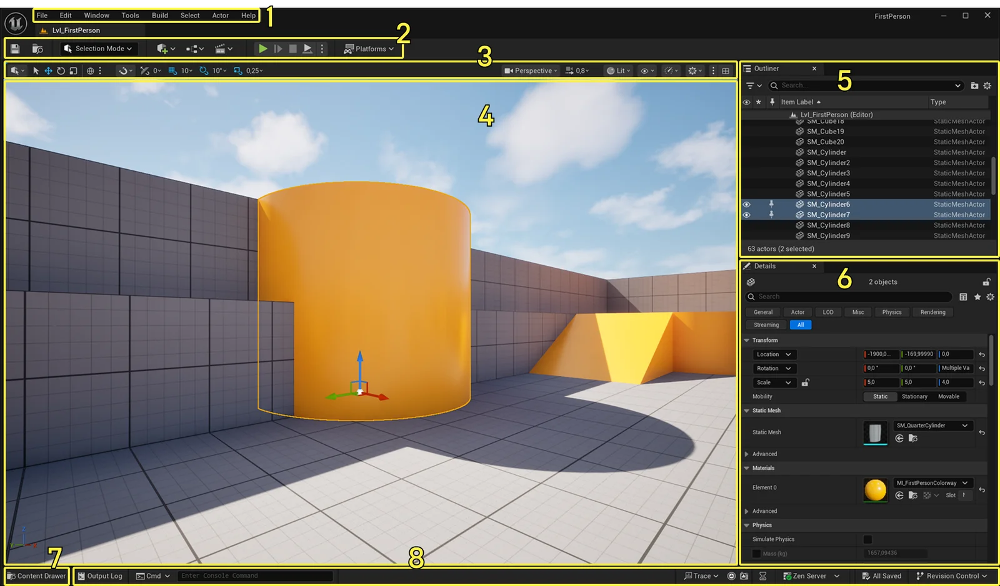
| Panel | Vai trò | Phím tắt hữu ích |
|---|---|---|
| Viewport | Cửa sổ 3D chính — nhìn và chỉnh level | F focus, Alt+Kéo orbit, chuột giữa pan |
| Content Browser | Quản lý mọi assets (mesh, texture, Blueprint…) | Ctrl+B mở asset trong Explorer |
| World Outliner | Danh sách Actor trong level theo cây | Ctrl+Shift+F tìm trong outliner |
| Details | Properties của Actor đang chọn | — |
| Modes | Switch giữa các tool: Select, Landscape, Foliage, Mesh Paint… | Shift+1/2/3 |
Điều hướng Viewport như pro
- WASD + chuột phải giữ: fly-through — cách di chuyển nhanh nhất.
- Alt + chuột trái kéo: orbit quanh điểm đang focus; Alt + chuột phải kéo: zoom.
- F: focus vào Actor đang chọn; Ctrl+Alt+Kéo chuột: box-select.
- G: bật Game View — ẩn mọi icon/gizmo, xem game "thật".
- Tải Viewport: gõ
HighResShot 3840x2160vào Console (~) để chụp 4K.
Content Browser & tìm asset
Content Browser tương tự Explorer nhưng mọi thứ đều là uasset. Dùng ô Search với filter: type:Blueprint, type:Texture, name:*coin*. Chuột phải → Asset Actions → Reference Viewer xem asset này được ai dùng — cực giá trị khi dọn project.
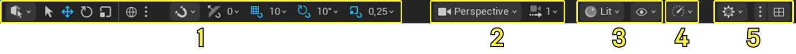
Các chế độ làm việc (Modes)
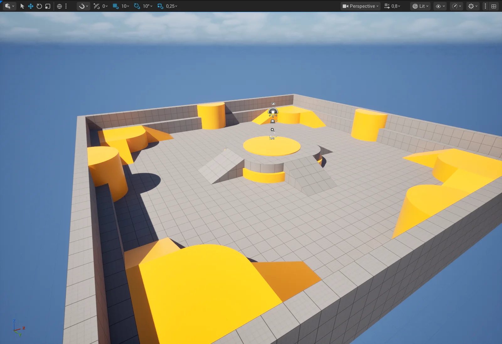
Panel bên trái trên Viewport chứa các Editor Modes: Select (mặc định), Landscape (tạo địa hình — Chương 10), Foliage (vẽ cây cỏ — Chương 10), Mesh Paint, Brush Editing. Mỗi mode có toolbar riêng đổi theo ngữ cảnh.
Hai thanh toolbar dễ nhầm
Main Toolbar nằm ngang trên cùng (chứa Save, Play, Launch…), còn Viewport Toolbar nằm trong góc trái trên viewport (chọn gizmo, snapping, view mode):
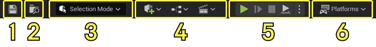
Trong project cũ: (1) bay camera một vòng map bằng WASD+chuột phải, (2) dùng World Outliner tìm BP_ThirdPersonCharacter, nhấn F focus, (3) mở Content Browser tìm tất cả texture có chữ "floor", (4) bấm G xem Game View rồi tắt.
📚 Xem docs đầy đủ: Unreal Editor Interface · Tools and Editors
Chương 3 Actor, Component & Level Design cơ bản
Khối xây dựng cơ bản của mọi thứ trong Unreal — và dựng level đầu tay.
Mọi thứ đều là Actor
Actor là bất kỳ object nào đặt được vào level: camera, ánh sáng, character, cube. Actor không tự chứa vị trí — vị trí nằm ở Root Component. Actor sinh ra bằng Spawn và chết bằng Destroy (Chương 4 sẽ gọi hai hàm này từ Blueprint).
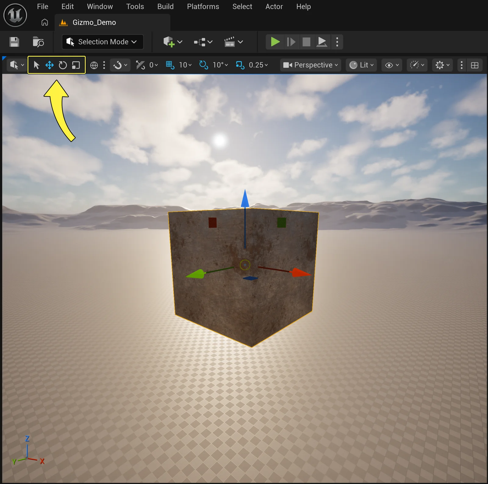
| Khái niệm | Ý nghĩa |
|---|---|
| Transform | Location (xyz cm), Rotation (pitch/yaw/roll độ), Scale |
| Component | Phần tử ghép vào Actor: Static Mesh, Light, Camera, Audio… Actor là "cái khung", Component là "bộ phận" |
| Static Mesh Actor | Actor chứa 1 Static Mesh — tường, sàn, prop tĩnh |
| Mobility | Static (không di chuyển, cheap) / Movable (dynamic, đắt hơn) — quyết định cả lighting |
Đặt object: Place Actors panel
Kéo thá từ Place Actors (Window → Place Actors) vào viewport: cube, sphere, light, camera… Hoặc kéo mesh từ Content Browser thẳng vào level. End = snap xuống mặt dưới, End+Shift = snap lên mặt trên — tuyệt vời đặt prop lên sàn.
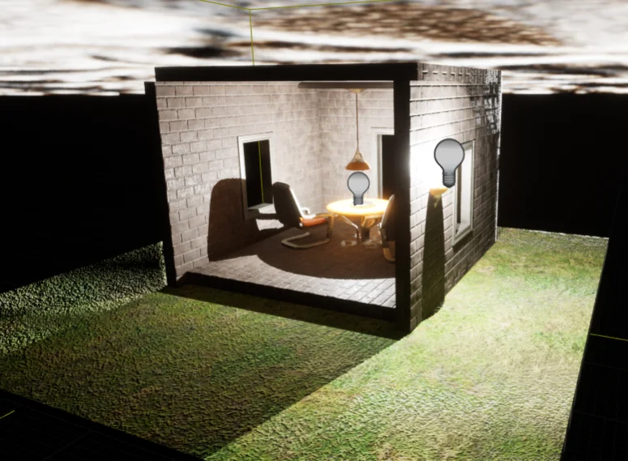
Snap & grid — độ chính xác của level designer
- Thanh toolbar góc phải trên viewport: bật Grid Snapping (10 cm mặc định), Rotation Snapping (10°), Scale Snapping.
- Giữ Ctrl kéo trục = duplicate theo trục đó.
- Alt + kéo = duplicate ngay tại chỗ.
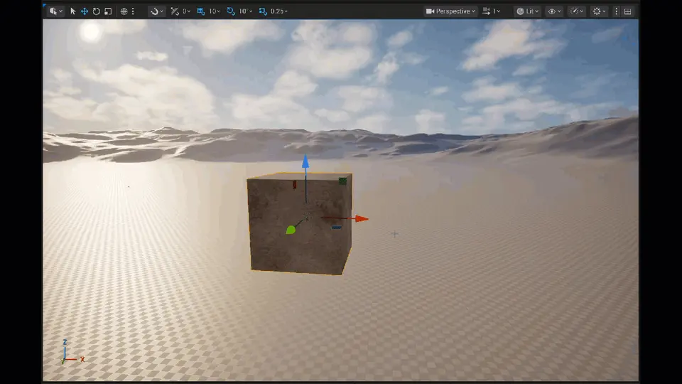
Layers của một level chơi được
Một level "đúng chuẩn" gồm: geometry (sàn tường - Blocking), lighting (Directional + Sky + vài point light), gameplay (Player Start, checkpoints, trigger volumes), art pass (mesh đẹp thay khối block). Làm theo thứ tự đó — không làm art trước gameplay!
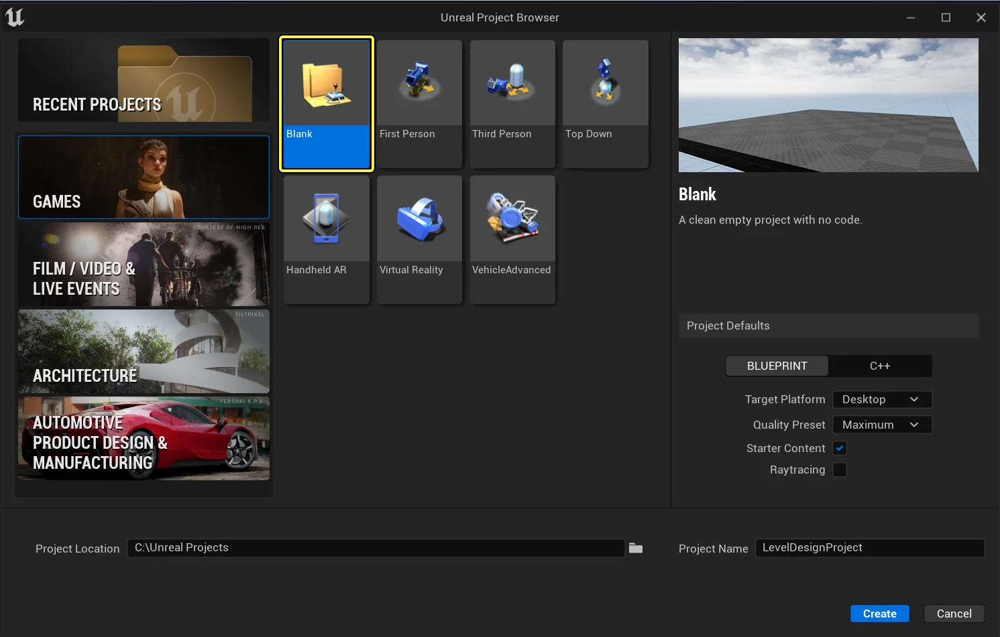
Player Start. Nhớ để trên mặt đất (có mũi tên xanh chỉ hướng spawn). Nếu game chạy mà "rơi xuyên sàn" — Player Start bị lơ lửng.
Tạo level mới (File → New Level → Basic). Dựng một căn phòng 10×10 m bằng cube (scale đúng 100=1 m), thêm Player Start, 1 Directional Light, 1 Sky Light và 2 Point Light. Bấm Play chạy thử trong phòng.
📚 Xem docs đầy đủ: Actors · Transforming Actors · Level Designer Quick Start · Spawning and Destroying an Actor
Chương 4 Blueprint — Visual Scripting căn bản
Lập trình bằng kéo thả node — ngôn ngữ "ruột" của Unreal.
Blueprint là gì?
Blueprint Visual Scripting là hệ thống lập trình bằng node của UE: mỗi node là một hàm/sự kiện, dây nối = luồng thực thi (dây trắng) hoặc dữ liệu (dây màu). Blueprint chạy trên máy ảo riêng, đủ nhanh cho 90% gameplay logic, và dùng chung tương thích với C++.
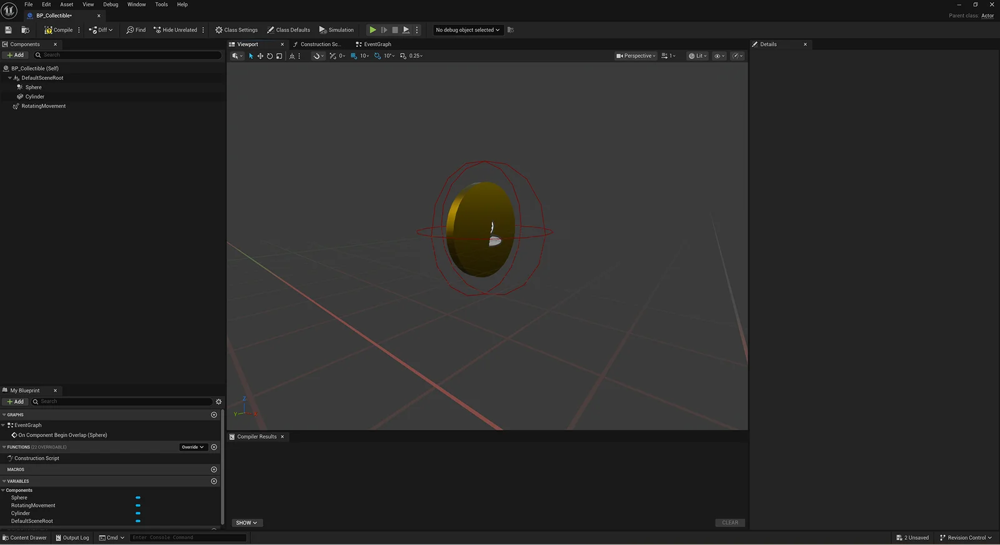
Các loại Blueprint
| Loại | Dùng khi nào |
|---|---|
| Level Blueprint | Logic riêng của một level: mở cửa khi bấm công tắc, trigger cutscene |
| Blueprint Class | Class tái sử dụng: item, character, weapon — tạo nhiều instance |
| Actor Component | Chức năng ghép vào Actor bất kỳ (health, inventory) |
| Widget Blueprint | UI (Chương 16) |
| Animation Blueprint | Điều khiển animation character (Chương 15) |
Event, Node, Pin — bộ ba cơ bản
- Event Node (màu đỏ): điểm bắt đầu —
Event BeginPlay(chạy 1 lần),Event Tick(mỗi frame),Event ActorBeginOverlap(va chạm)… - Exec pin (dây trắng): luồng thực thi theo thứ tự. Data pin (dây màu): truyền giá trị.
- Right-click mở menu đầy đủ; kéo từ pin ra gõ tên hàm để auto-create node.
- Ctrl+R refactor tên biến an toàn — mọi chỗ dùng tự đổi theo.
Ví dụ đầu tiên: đồng xu tự xoay + nhặt được
Mở Blueprint mới (Content Browser → right-click → Blueprint Class → Actor), thêm Static Mesh Component (mesh sphere dẹt), rồi vẽ:
Event BeginPlay → Set Actor Enable Collision (true) Event Tick → AddActorLocalRotation (Z = 2.0 mỗi frame) Event ActorBeginOverlap (Other Actor) → Cast To BP_ThirdPersonCharacter (thành công) → DestroyActor (self) // biến mất khi player chạm
Cast là cách hỏi "Actor chạm vào tôi có phải là Player không?" — chỉ khi đúng mới chạy nhánh tiếp. Kéo mesh vào level làm vài bản — mỗi bản là một instance riêng.
Variables & phát triển logic
Panel My Blueprint → Variables → + : tạo Score (Integer), bIsOpen (Boolean), TargetPoint (Vector)… Tick Instance Editable để chỉnh giá trị từng instance trong Details panel ngay trong level. Get/Set bằng kéo thả tên biến vào graph.
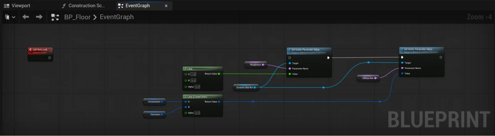
Nâng cấp BP_Coin: thêm biến CoinValue (Integer, Instance Editable, default 10). Khi overlap, trước khi Destroy hãy in ra màn hình console bằng node Print String ghép "Picked coin worth " + CoinValue. Rồi làm thêm 1 coin "đặc" CoinValue = 50.
Gợi ý
ToText(Integer) hoặc dùng chuỗi format. Muốn cộng điểm thật: lưu biến Score trong BP_ThirdPersonCharacter và gọi qua Cast.📚 Xem docs đầy đủ: Blueprints Visual Scripting · Puzzles: Moving Platforms · Module 3: Create a Coin Pickup with Blueprints
Chương 5 Content Pipeline — Import assets
Đưa mesh, texture, animation từ DCC tools (Blender, Maya) vào project đúng chuẩn.
Asset types cần biết
| Type | Nội dung | Nguồn thường gặp |
|---|---|---|
| Static Mesh | Geometry tĩnh: tường, prop, weapon | FBX/glTF từ Blender/Maya |
| Skeletal Mesh | Geometry có bone để animate | FBX rigged |
| Texture 2D | Ảnh: diffuse, normal, roughness… | PNG/TGA/EXR |
| Material | Công thức màu sắc bề mặt (Chương 6) | Tạo trong UE |
| Sound Wave / MetaSound | Âm thanh (Chương 13) | WAV/OGG |
Hệ thống Interchange
Từ UE 5.x, import đi qua framework Interchange: kéo file FBX/glTF/abc vào Content Browser → hiện Interchange Pipeline Stack để chọn trước lúc import: tạo material tự động, generate collision, import ánh xạ bone… Mọi lựa chọn đều lưu được thành preset tái sử dụng.
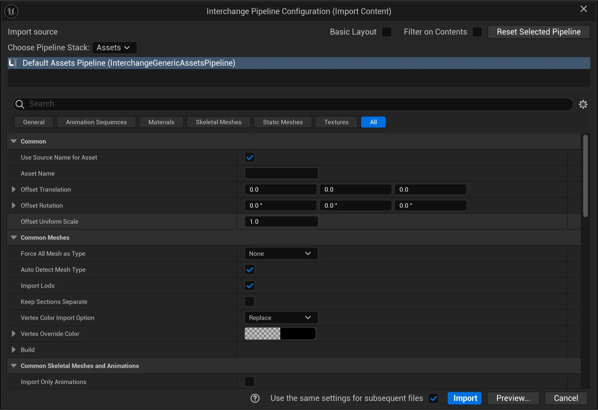
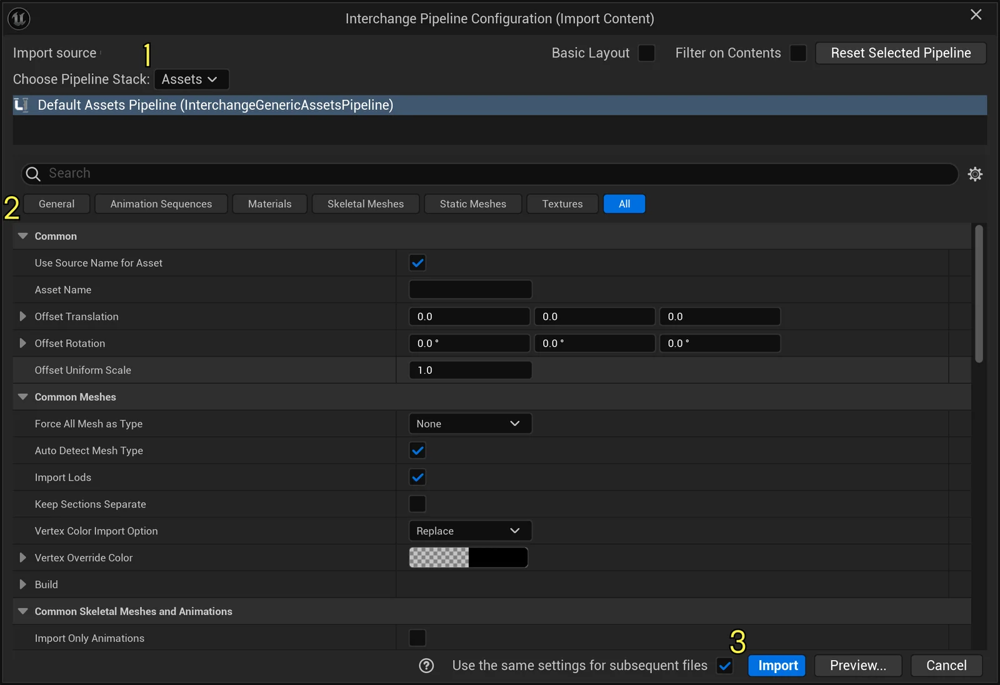
Chuẩn FBX từ Blender/Maya
- Đơn vị: 1 Unreal unit = 1 cm. Xuất FBX ở scale thực (Blender: Unit Scale 0.01 hoặc Apply Scale khi export).
- Hướng: UE là Z-up, import FBX tự xoay — kiểm tra Static Mesh → Details → Import Rotation.
- Pivot: đặt origin đúng chỗ (chân prop) trước khi export.
- Collision: đơn giản nhất là trong Static Mesh Editor → Collision → Add Box Simplified Collision, hoặc tick Auto Generate Collision khi import.
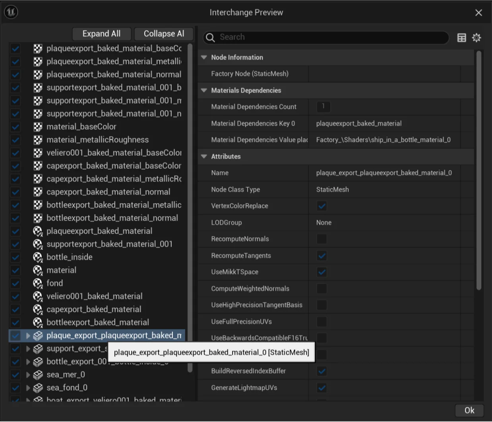
SM_Chair (Static Mesh), SK_Character (Skeletal), T_Wood_D (Texture Diffuse), M_Wood (Material), MI_Wood_Oak (Material Instance). Khối lượng asset lên hàng nghìn thì sẽ cảm ơn chính mình.
Tải 1 model miễn phí (glTF/FBX) từ Fab hoặc Sketchfab, import vào project bằng Interchange, bật auto collision, kéo vào level và bấm Play đi xuyên thử — nếu xuyên được thì collision chưa có.
📚 Xem docs đầy đủ: Importing Assets Using Interchange · Set Up Your Project and Import Content · Importing Static Meshes
Chương 6 Material căn bản
"Công thức nấu" bề mặt: màu, kim loại, nhám — viết bằng node trong Material Editor.
Material là công thức, không phải ảnh
Material trong UE là shader graph: input ảnh + toán tử → tô lên mesh. Ba input quan trọng nhất của Unlit/Lit surface:
| Pin | Ý nghĩa | Giá trị mẫu |
|---|---|---|
| Base Color | Màu bản thể (albedo) | Vector3, 0–1 |
| Metallic | 0 = sơn/đá/gỗ, 1 = kim loại thật | Scalar 0 hoặc 1 |
| Roughness | 0 = bóng gương, 1 = nhám mờ | Scalar 0–1 |
| Normal | Giả chi tiết bề mặt không thêm polygon | Normal map (tím xanh) |
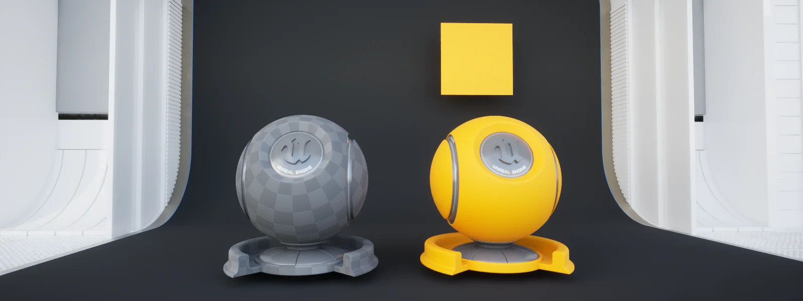
Material Editor nhanh
Double-click bất kỳ material → mở editor. Right-click thêm node: Constant (giá trị), Constant3Vector (màu), TextureSample (ảnh), Multiply/Lerp (phối hợp). Kéo pin output vào pin input của Material. Bấm Apply để compile — kết quả xem ngay ở panel Preview.
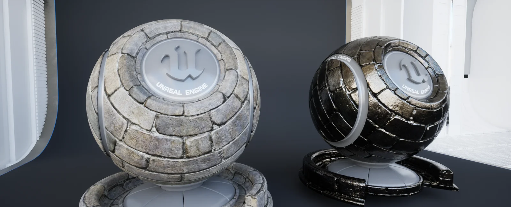
Material Instance — lý do project của bạn nhanh
Đừng tạo 20 material cho 20 màu gỗ. Tạo 1 Material cha có tham số (right-click node Constant → Convert to Parameter), rồi right-click material → Create Material Instance. Instance đổi tham số không cần recompile shader — pink 10 giây thành 0 giây.
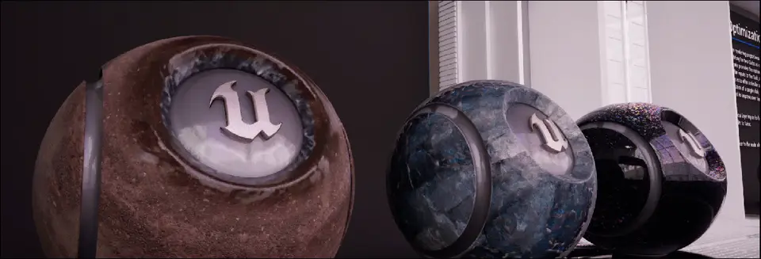
Tạo material M_Learning: Base Color từ TextureSample (dùng texture trong Starter Content), Roughness là parameter. Tạo 2 instance: một bóng (0.1), một nhám (0.9), áp lên 2 quả cầu đặt cạnh nhau dưới đèn — so sánh.
📚 Xem docs đầy đủ: Create Materials and Material Instances · Physically Based Materials
Chương 7 Lighting cơ bản + Mini Project
Ba vị thần ánh sáng của scene — và ghép tất cả kiến thức Level 1 thành một mini game.
Bộ ba ánh sáng ngoài trời
| Light Actor | Vai trò | Notes |
|---|---|---|
| Directional Light | Mặt trời — shadow song song | 1 cái/level, chỉnh Atmosphere Sun Light |
| Sky Light | Ánh sáng trời phản chiếu môi trường | SLS Capture Scene để ăn theo bầu trời |
| Height Fog | Sương theo độ cao, tạo chiều sâu | Fog màu nên khớp màu trời |
| Point / Spot Light | Đèn trong nhà, highlight prop | Đặt Mobility Movable nếu cần tắt/bật runtime |
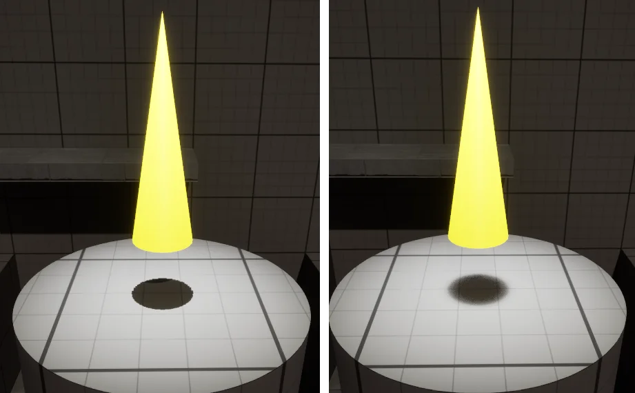
Intensity, màu, và Exposure
UE dùng đơn vị ánh sáng vật lý (lux, candela) — đèn mặt trời mặc định ~10 lux × đơn vị lớn. Camera có Auto Exposure: scene tối/ sáng tự cân. Muốn "như phim": Viewport → Show → Auto Exposure hoặc đặt Post Process Volume khóa Exposure Min=Max.
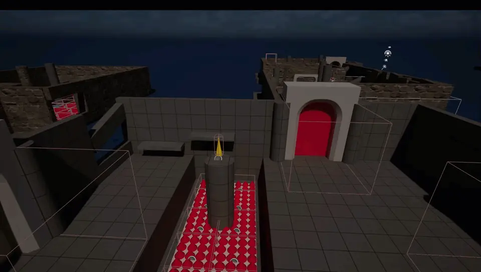
Mini Project 1 — "Coin Rush"
🎯 Checklist dự án (ghép Chương 1–7)
📚 Xem docs đầy đủ: Light a Scene · Lighting the Environment · Direct Lighting
Chương 8 Enhanced Input & SaveGame
Điều khiển chuẩn thời UE5 và không để người chơi mất tiến trình — chương khép lại Level Starter.
Enhanced Input — IA · IMC · Mapping
Từ UE5, phím không còn bind cứng trong Project Settings mà tách thành asset — remap dễ, làm menu đổi phím dễ, chuột/gamepad một hệ chung:
| Thành phần | Vai trò | Ví dụ |
|---|---|---|
| Input Action (IA) | Một hành động mang giá trị | IA_Jump (Digital), IA_Move (Axis2D), IA_Look (Axis2D) |
| Input Mapping Context (IMC) | Bảng map phím → IA, bật/tắt runtime theo priority | IMC_Default, IMC_Vehicle (lên xe mới bật) |
| Mapping | 1 dòng trong IMC: key + Modifier + Trigger | W → IA_Move (modifier Negate, Swizzle) |
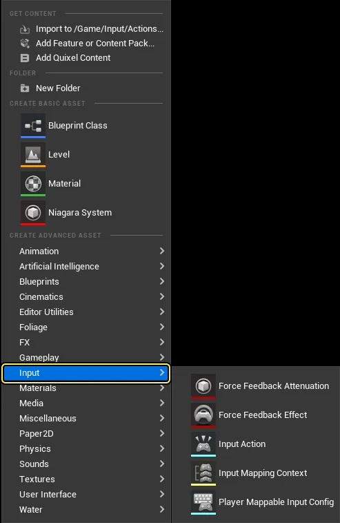
Tạo IA rồi chọn Value Type: Digital (bool) cho nhảy/tương tác, Axis1D cho tiến/lùi, Axis2D cho di chuyển + nhìn quanh. Trigger quyết định lúc nào sự kiện bắn (Down, Pressed, Held, Pulse...), Modifier chỉnh giá trị trước khi gửi (Negate đổi dấu, Swizzle đổi trục X/Y).
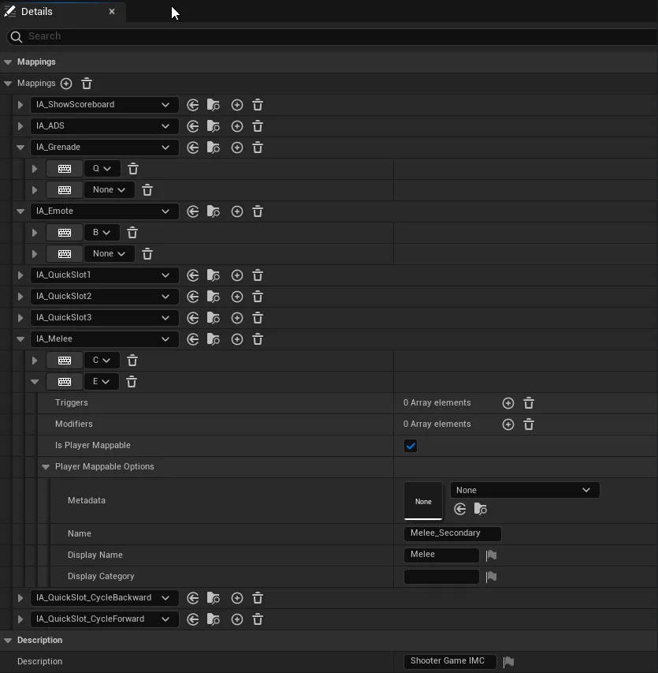
Trong Character, bắn event EnhancedInputAction IA_... để nhận giá trị; còn bảng phím được kích hoạt bằng node Add Mapping Context (thường gọi trong PlayerController BeginPlay). Nhân vật lên xe? Bật IMC_Vehicle với priority cao hơn — toàn bộ phím đổi trong một node.
BP_ThirdPersonCharacter của project cũ: IA_Move, IA_Look, IMC_Default và Add Mapping Context có mặt ngay trong template — tới giờ mới gọi đúng tên từng thứ.
SaveGame — không để mất công người chơi
Chỉ dữ liệu được lưu (điểm, vị trí, vật phẩm), không lưu asset/texture. Quy trình 3 bước:
💾 Checklist SaveGame
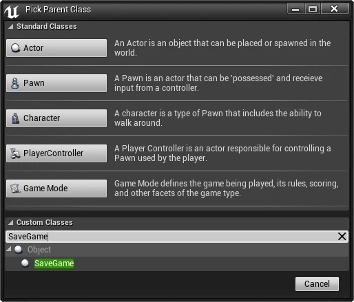
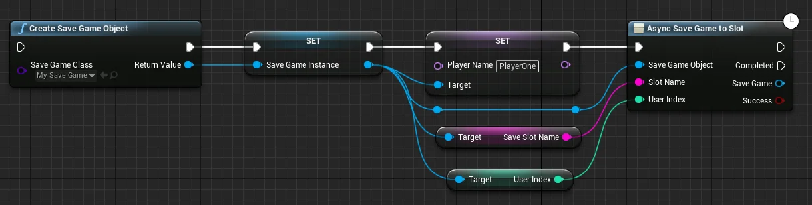
.sav trong Saved/SaveGames; "Slot1" và "slot1" là hai file khác nhau. Chọn quy ước ngay từ đầu (SaveSlot_01, Profile_A...) và đừng đổi giữa chừng.
Nâng cấp Coin Rush — high score & lưu game
🎯 Checklist mở rộng mini game (ghép Chương 4 + 8)
Remap toàn bộ phím di chuyển của template sang mũi tên ← ↑ → ↓ (chỉ sửa trong IMC_Default). Thêm IA_Dash bằng Left Shift với Trigger Held 0.2s: nhân vật lướt nhanh gấp 3 trong 0.2 giây rồi về tốc độ thường.
Gợi ý
1. Actor đặt vị trí ở đâu?
2. Muốn 10 màu gỗ mà không recompile shader 10 lần?
3. Node nào là điểm bắt đầu chạy mỗi frame?
4. Muốn phím S cho giá trị âm khi di chuyển bằng Input Action kiểu Axis1D?
5. Node nào ghi dữ liệu game xuống file .sav?
📚 Xem docs đầy đủ: Enhanced Input · Saving and Loading Your Game
Chương 9 Lumen — Global Illumination & Reflections
Ánh sáng nảy (bounce) thời gian thực — "công nghệ huyền thoại" của UE5.
Lumen giải quyết vấn đề gì?
Trước đây, ánh sáng gián tiếp (Global Illumination — GI) phải "bake" trước — mất giờ và tĩnh. Lumen tính GI + phản chiếu thời gian thực: tắt đèn → bóng tối lan đúng vật lý; đổi màu tường → ánh nảy theo luôn. Lumen mặc định bật trong project UE5.8 khi dùng template.
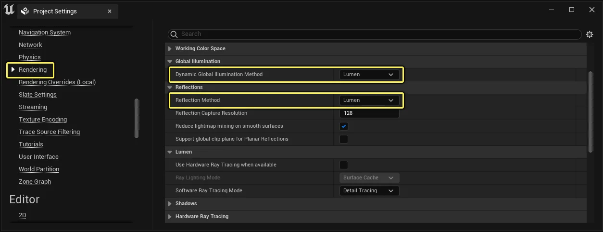
Bật/tắt và kiểm soát
- Post Process Volume (Infinite Extent) →
Global Illumination → Method: Lumen,Reflections → Method: Lumen. - Hoặc tắt toàn cục: Project Settings →
Dynamic Global Illumination Method = None(dùng khi target máy yếu). - Console (
~):r.Lumen.ScreenProbeGather 1, xem chi tiết perf bằngstat gpu.
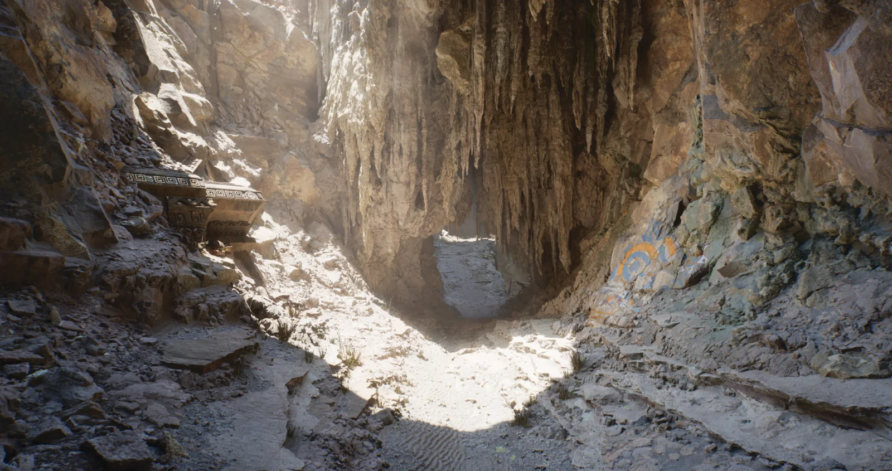
Các khái niệm cần phân biệt
| Khái niệm | Ý nghĩa |
|---|---|
| Surface Cache | Lumen "chụp" bề mặt mesh vào cache để tính nảy sáng nhanh |
| Final Gather Quality | Chất lượng tính GI trong Post Process Volume — tăng lên giảm noise |
| Ray Lighting Mode | Cách Lumen chiếu sáng: Surface Cache (nhanh) vs Hit Lighting (đẹp, tốn) |
| Local Fog Volumes | Khối sương cục bộ (5.7+) — sương mù có thể nảy sáng từ Lumen |
Trong 1 phòng kín: đặt 1 Point Light màu đỏ Movable, tắt Directional/Sky Light. Quan sát ánh đỏ nảy ra trần/sàn. Bật tắt r.Lumen.Scene.Lighting 0/1 trong console để thấy khác biệt khi mất GI.
📚 Xem docs đầy đủ: Lumen Global Illumination and Reflections · Local Fog Volumes · Adjust Environment Lighting Features
Chương 10 Landscape & Foliage
Tạo núi đồi sông hồ bằng cọ vẽ — và rắc cây khắp thế giới.
Landscape — địa hình
Chọn mode Landscape (Shift+2) → Create New. Landscape là lưới ô khổng lồ chuyên dụng: mỗi component có LOD riêng, cho map hàng km. Vẽ bằng các cọ: Sculpt (đắp đào), Smooth, Flatten, Ramp, Erosion (xói mòn giả lập), Hydro Erosion.
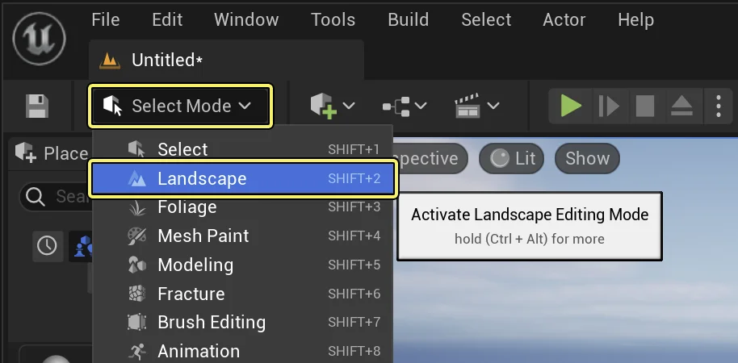
| Thông số | Ý nghĩa | Gợi ý |
|---|---|---|
| Section Size / Sections Per Component | Mật độ lưới | 63×63 quadrants/section cho chi tiết gần |
| Landscape Material | Material nhiều layer (cỏ, đá, đất) | Dùng node LandscapeLayerBlend |
| Data Layers | Bật/tắt vùng landscape runtime | Nâng cao — Ch21 |
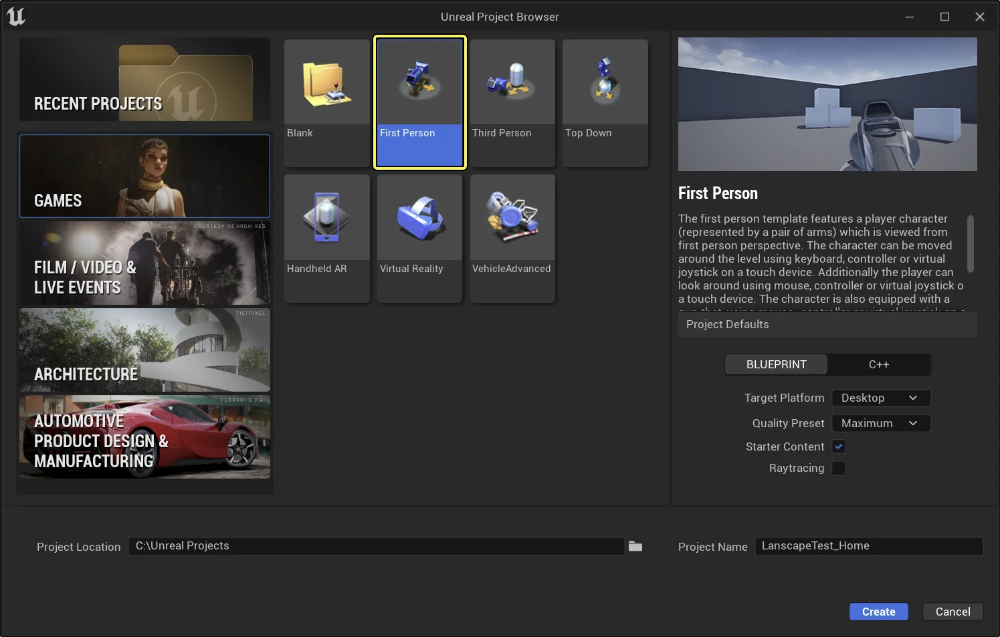
Paint layers — tô màu bề mặt
Material landscape cần LandscapeLayerBlend trộn nhiều texture theo trọng số vẽ (grass/dirt/rock/snow). Vẽ trong tab Paint của Landscape mode. Muốn tự động theo độ cao/độ dốc: dùng LandscapeLayerCoords + LandscapeVisibilityMask.
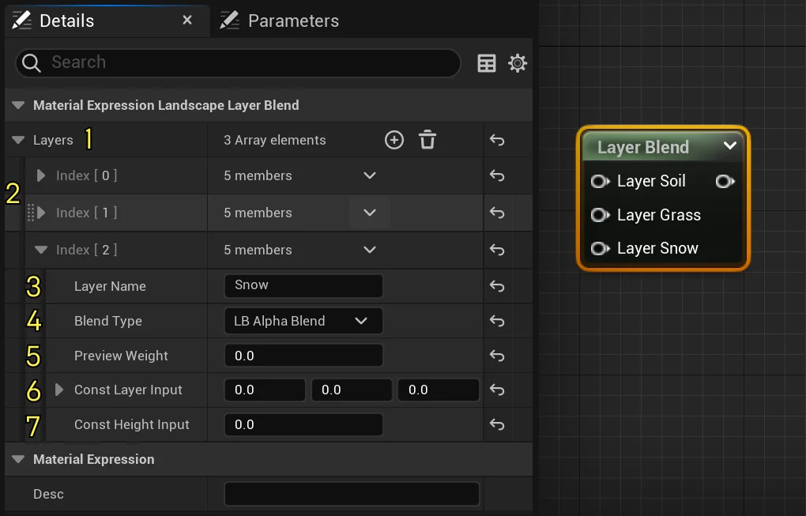
Foliage — rắc cây
Mode Foliage (Shift+3): kéo mesh (nên tick Nanite cho tán lá — Ch22) vào danh sách, chỉnh mật độ rồi click/vẽ lên landscape. Procedural Foliage (v2) tự rắc theo quy tắc (độ dốc, tầng đất).
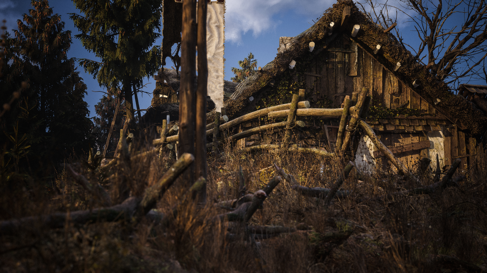
SimpleGrassWind hoặc WPO (World Position Offset) để lá lay. Cây số lượng lớn → bật Nanite + Runtime Virtual Texture cho shadow nhẹ.
Tạo landscape 1009×1009, đắp 1 ngọn núi + 1 thung lũng, tô 3 layer (cỏ/đá tuyết), rắc 2 loại cây từ Starter Content (SM_Pine). Camera bay chụp 1 shot "postcard".
📚 Xem docs đầy đủ: Landscape Quick Start Guide · Landscape Materials · Foliage Mode · Editing Landscapes
Chương 11 Physics & Collision
Cho vật rơi, va chạm, phát đạn — thế giới có "trọng lực thật".
Chaos Physics
UE5 dùng engine vật lý Chaos. Ba mức dùng: (1) Simulate — object rơi/nảy thật; (2) Collision only — chặn di chuyển không mô phỏng (rẻ); (3) Query only — chỉ raycast/overlap. Bật simulate: chọn Static Mesh Actor → Details → Simulate Physics (mesh phải có collision).
Collision Presets
| Preset | Ý nghĩa |
|---|---|
| BlockAll | Chặn mọi object |
| OverlapAll | Không chặn — chỉ báo hiệu Overlap events (dùng cho trigger, pickup) |
| BlockAllExceptPawn | Chặn tất cả trừ nhân vật (đạn, vật cản riêng) |
| PhysicsActor | Dành cho vật simulate |
Cấu trúc sâu hơn: Object Channels (Pawn, PhysicsBody, Vehicle…) + Trace Channels (Visibility, Camera — cho raycast). Tự tạo channel trong Project Settings → Collision. Quy tắc chặn/phản ứng nằm trong bảng Response matrix của từng preset.
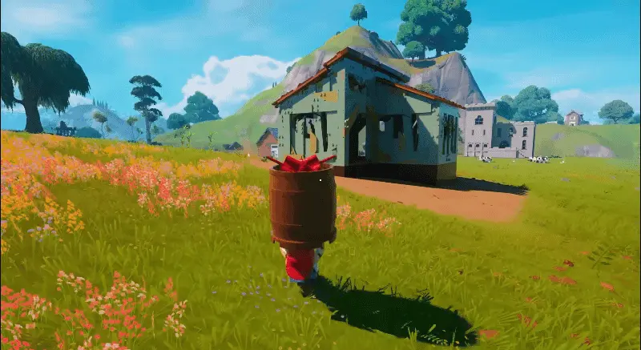
Blueprint physics thường gặp
- Add Impulse / Add Force: đẩy vật (đạn bắn, nổ).
- Launch Character: đá nhân vật nảy lên (jump pad).
- Set Simulate Physics (component): bật/tắt runtime — rơi cánh tay khi chết.
- On Component Hit event: phản ứng khi va chạm thật (âm thanh, hiệu ứng).
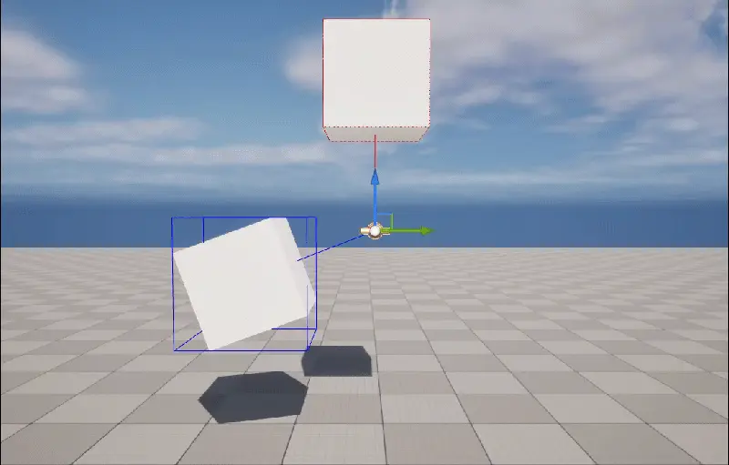
Làm jump pad: 1 tấm đĩa, khi Player overlap → Launch Character (Z velocity 1200). Làm bowl bằng 5 cube chặn + 1 quả cầu Simulate Physics; bắn cầu ra khỏi bowl bằng Add Impulse khi bấm E gần cầu.
📚 Xem docs đầy đủ: Physics · Collision · Puzzles: Moving Platforms
Chương 12 AI cơ bản — NavMesh & Behavior Tree
Cho NPC biết đi, biết thấy và biết quyết định — bộ ba NavMesh · AI Perception · Behavior Tree.
NavMesh — vùng đất AI đi được
Kéo NavMeshBounds Volume scale bao quanh map, engine tự "quét" mọi mặt phẳng đi được thành lưới polygon — nhấn P trong viewport để xem lớp phủ màu xanh lá. AI không "nhìn thấy" tường: nó chỉ tìm đường trên lưới này, nên sửa geometry là phải chờ build lại NavMesh.
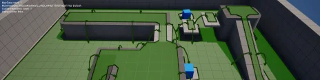
Cho AI di chuyển bằng node AI MoveTo (hoặc task Move To trong Behavior Tree): engine tự tìm đường né vật cản, và tự tính lại đường nếu bạn đẩy vật chặn ra giữa lúc runtime.
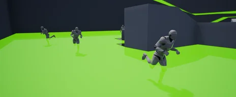
AI Controller — "bộ não" của NPC
Mỗi Pawn có một Controller điều khiển: người chơi nối PlayerController (nhận input), NPC nối AIController (chạy logic tự động). Trong Character class đặt AI Controller Class = BP_GuardController của bạn — Behavior Tree và Perception sẽ treo vào Controller này.
AI Perception — cho AI mắt và tai
Add Component AIPerception vào AIController, đăng ký sense cho AI:
| Sense | Ý nghĩa | Thông số chính |
|---|---|---|
| Sight | Thấy mục tiêu trong tầm + góc nhìn | Sight Radius, Lose Sight Radius, Peripheral Vision Angle |
| Hearing | Nghe tiếng động từ Report Noise Event | Hearing Range |
| Damage | Cảm nhận khi bị tấn công | — |
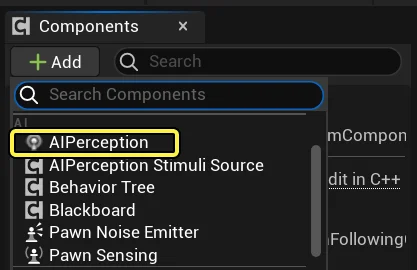
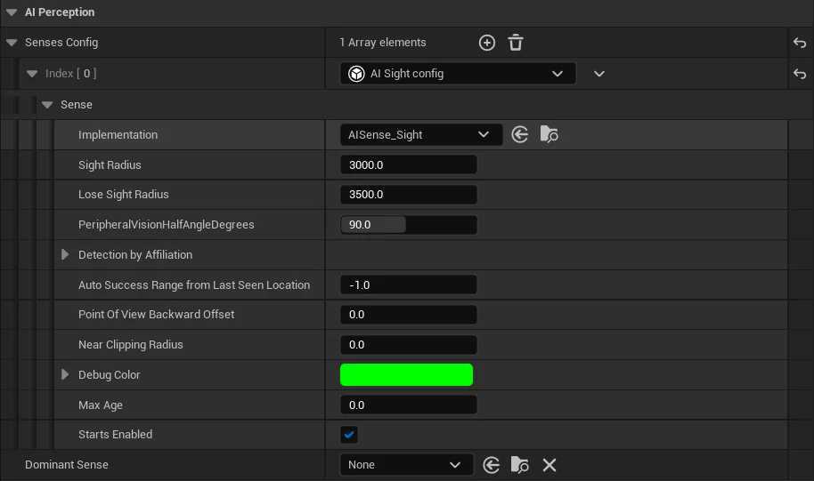
Bắt sự kiện On Perceived (AIPerception): thấy người chơi → ghi vào Blackboard key TargetActor; mất dấu → sự kiện bắn lần nữa, set key về rỗng để nhánh tuần tra chạy lại.
Behavior Tree + Blackboard — quyết định theo nhánh
| Thành phần | Vai trò |
|---|---|
| Blackboard | "Bộ nhớ" — các key (TargetActor, HomeLocation, PatrolIndex) do tree đọc/ghi |
| Selector | HOẶC — chạy nhánh con đầu tiên thành công, thất bại hết mới chịu thua |
| Sequence | VÀ — chạy lần lượt từng con, một con fail là cả nhánh fail |
| Task | Hành động cụ thể: Move To, Wait, Play Animation, hoặc Task tự viết |
| Decorator / Service | Điều kiện vào nhánh (Decorator) / việc chạy nền theo nhịp (Service) |
Kích hoạt: AIController BeginPlay → node Run Behavior Tree (BT_Guard) + Use Blackboard (BB_Guard). Từ đó mọi quyết định nằm trong asset BT — designer chỉnh hành vi AI mà không đụng Blueprint của Pawn.
Mini project — Bot gác kho
🎯 Checklist Bot gác kho (ghép Chương 11 + 12)
Thêm Hearing cho guard: người chơi chạy (bước chân) trong 8 m thì bot quay người nhìn về phía phát ra tiếng động dù chưa thấy. Gợi ý: Report Noise Event trong Character khi tốc độ > ngưỡng, Blackboard thêm key LastNoiseLocation.
📚 Xem docs đầy đủ: Behavior Trees · Navigation System · AI Perception
Chương 13 Audio với MetaSounds
Âm thanh thế hệ mới của UE5 — âm thanh cũng "lập trình bằng node".
Từ Sound Cue tới MetaSound
UE4 dùng Sound Cue (graph đơn giản). UE5 giới thiệu MetaSounds: graph đầy đủ sức mạnh DSP — random pitch, crossfade, lọc theo parameter runtime, procedural music. Sound Cue vẫn dùng được cho việc đơn giản.
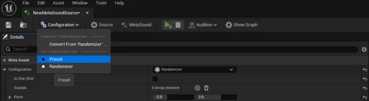
Phát âm thanh trong Blueprint
- Play Sound at Location — tiếng một lần ở vị trí (bước chân, va chạm).
- Play Sound Attached — gắn theo Actor (tiếng động cơ, lửa cháy).
- Audio Component — component điều khiển được (pause, fade, đổi parameter).
- Sound Class + Sound Mix — phân loại (SFX/Music/Voice) để chỉnh volume riêng, mute khi pause.
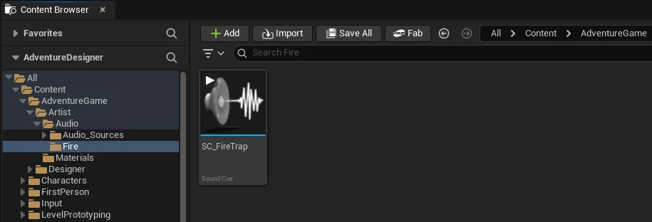
Set Float Parameter trên Audio Component để đổi pitch/giá trị theo gameplay (xe tăng tốc → động cơ cao tần).
Cho BP_Coin (Ch4) một âm "ting" khi nhặt: Play Sound at Location tại vị trí coin. Sau đó tạo MetaSound pitch random ±10% mỗi lần phát để không nghe lặp.
📚 Xem docs đầy đủ: MetaSounds · MetaSound Templates Quick Start · Add Sounds to Fire Traps
Chương 14 Niagara — Visual Effects
Particles: lửa, khói, pháo hoa, mưa — hệ VFX của mọi game UE.
Niagara thinking
Niagara mô phỏng particle bằng stack Emitter → mỗi emitter chứa module (spawn rate, gravity, color…) chạy theo Stages: Emitter Spawn → Particle Spawn → Particle Update mỗi frame. Người mới bắt đầu từ templates: Fountain, Fire, Smoke, Explosion.
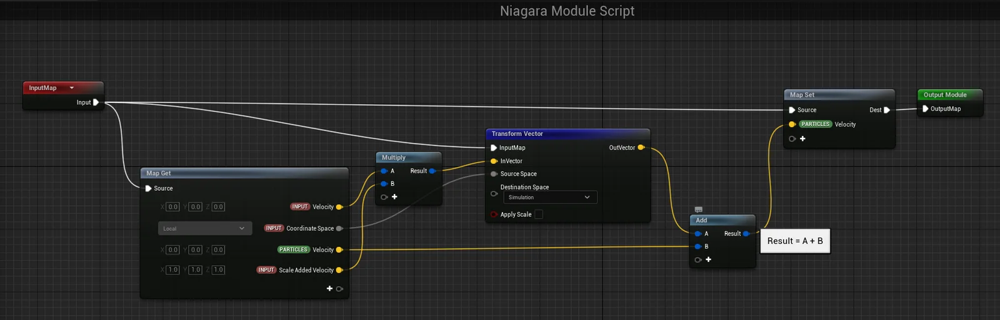
| Khái niệm | Ý nghĩa |
|---|---|
| System | VFX hoàn chỉnh (nhiều emitter: lửa + khói + tia) |
| Emitter | Một luồng particle |
| Module | Hành vi ghép vào: Shape Location, Gravity, Scale Color |
| Renderer | Cách vẽ: Sprite, Mesh, Ribbon (vệt), Light |
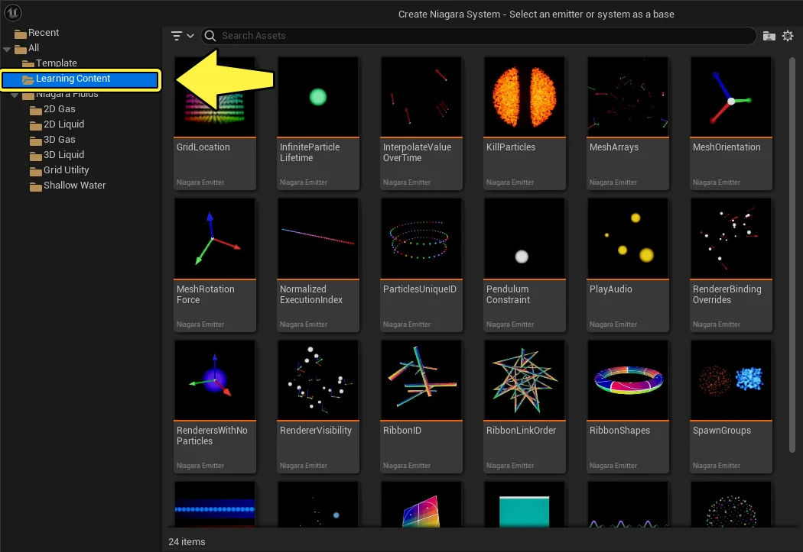
Quick start trong 5 phút
- Content Browser → right-click → FX → Niagara System → From selected emitter(s) → chọn Fountain.
- Kéo vào level. Chọn → Details đổi màu/độ cao nước.
- Mở system: vào Particle Update, sửa module
Add Velocity in Coneđể đổi hướng phun. - Đổi Renderer thành Mesh Renderer, chọn mesh đá nhỏ → thành phun đá.
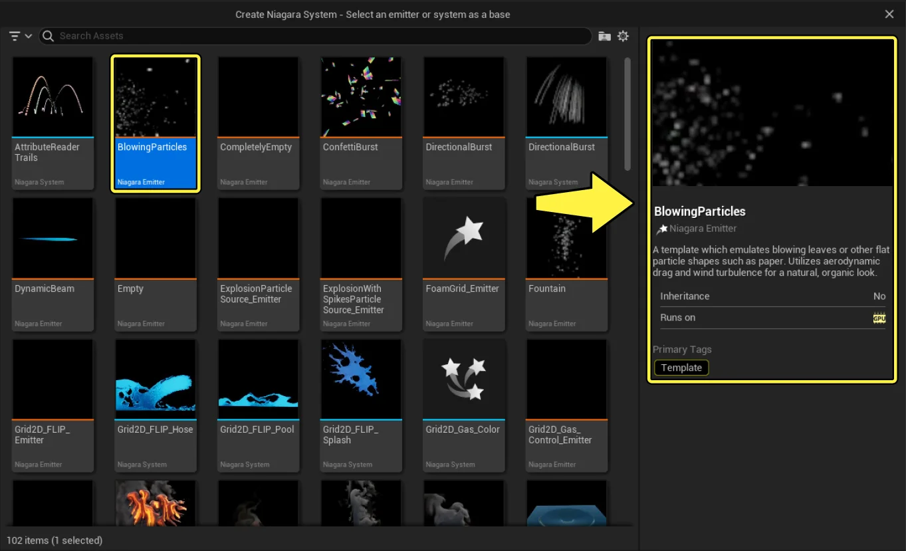
Tạo VFX "đồng xu vỡ": khi nhặt coin (Ch4), spawn Niagara system burst 20 hạt vàng bắn toé rồi biến mất (dùng template Burst + Lifetime ngắn). Gợi ý node: Spawn System at Location.
📚 Xem docs đầy đủ: Niagara Overview · Niagara Quick Start · Niagara Key Concepts
Chương 15 Character Animation
Nhân vật chuyển động mượt: Skeleton, Animation Blueprint, Control Rig.
Pipeline animation
Skeletal Mesh (model có bone) + Skeleton asset (bộ xương dùng chung) + Animation Sequences (các clip: idle, run, jump). Cùng Skeleton thì dùng chung animation — và có thể Retarget sang bộ xương khác (IK Rig).
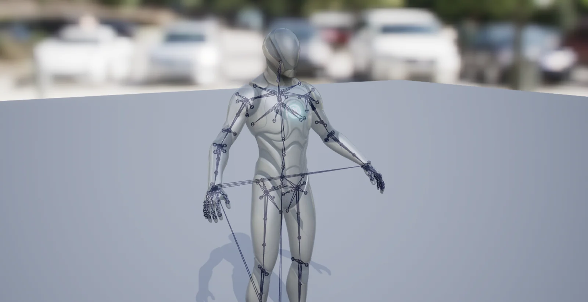
| Asset | Vai trò |
|---|---|
| Skeleton | Cây bone + hierarchy — chia sẻ giữa mesh & animation |
| Physics Asset | Body + constraint cho cloth/ragdoll va chạm |
| Animation Blueprint | Chọn clip nào chạy theo state (đi/nhảy/tấn công) |
| Control Rig | Rigging/IK procedural ngay trong UE (ví dụ tay đặt lên tường) |
| Anim Montage | Clip cắt theo section — dùng cho combo tấn công |
Animation Blueprint — state machine
Trong AnimBP, Event Graph tính biến (Speed, IsInAir) từ pawn → đưa vào Anim Graph. Anim Graph chứa State Machine: mỗi state là 1 pose/clip, chuyển theo điều kiện (Speed > 0 → Run). Dùng Blend Space để trộn idle-walk-run theo trục Speed liên tục thay vì hard-switch.
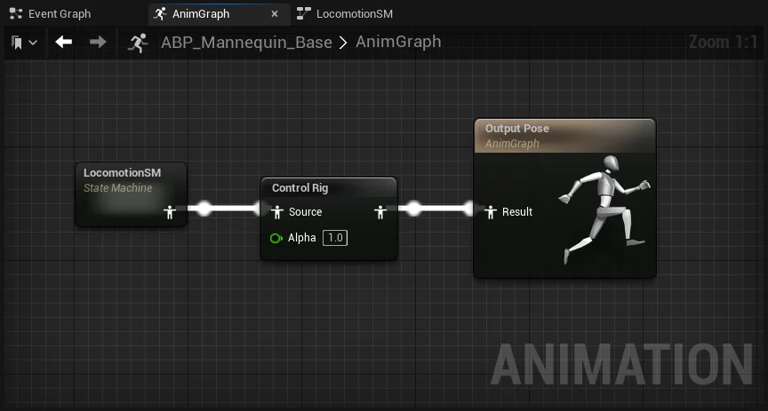
Control Rig & retarget
Control Rig là rigging node-graph trong engine: làm FK/IK, sửa pose, thậm chí procedural animation runtime (tay nắm dây). IK Retargeter chuyển animation từ skeleton này sang skeleton khác (Mannequin → nhân vật của bạn) mà không cần làm lại.
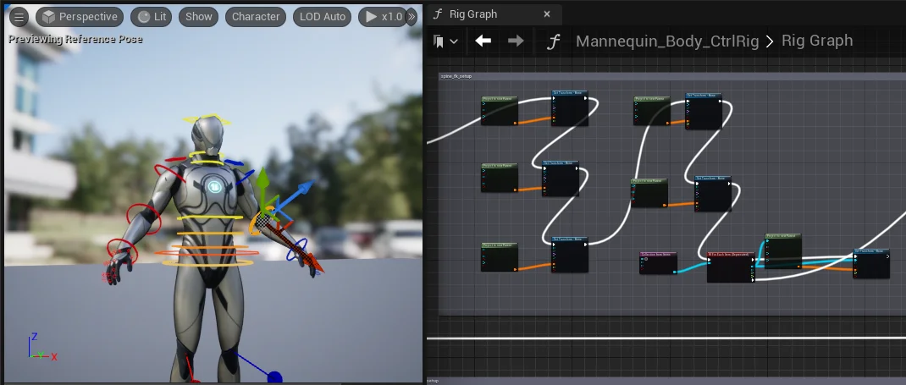
Mở AnimBP của Third Person character, xem state machine Idle/Walk/Run điều kiện gì. Thêm state Dance (dùng animation từ Starter Content hoặc FBX ngoài): khi bấm phím B → biến bDancing=true → chuyển state dance trong 3 giây rồi về Idle.
📚 Xem docs đầy đủ: Skeletal Meshes · Animation Blueprints · Control Rig Quick Start
Chương 16 UMG — UI / HUD
Máu, mana, điểm số, menu — giao diện bằng Widget Blueprints.
Widget Blueprint cơ bản
UMG (Unreal Motion Graphics): tạo UI bằng Widget Blueprint — kéo button/text/progress bar vào Canvas Panel, neo bằng Anchors để co giãn đúng mọi màn hình. Mỗi widget có Desired Size, cha xếp con qua Slots (Canvas/Horizontal/Vertical/Grid).
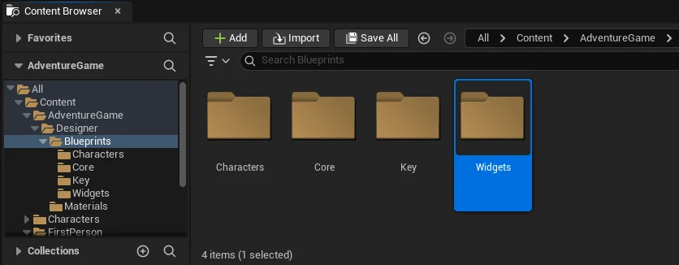
Hiện HUD trong game
Event BeginPlay → Create Widget (Class = WBP_HUD) → Add to Viewport Get Player Controller → Set Show Mouse Cursor (false)
Đổ dữ liệu: trong WBP_HUD tạo Bind cho Progress Bar (Percent = Health/MaxHealth) hoặc nhận giá trị qua Event Dispatcher/function gọi từ character mỗi khi máu đổi.
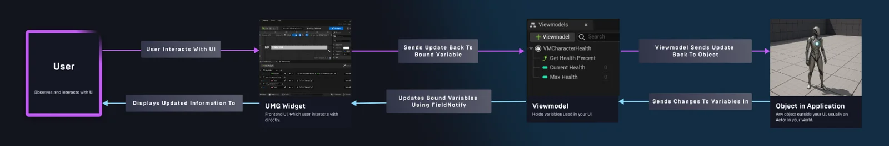
UMG Viewmodel (MVVM)
Cách mới của Epic: Viewmodel tách dữ liệu (field Health) khỏi widget — widget bind vào viewmodel, gameplay chỉ update model. Dự án lớn dùng cách này tránh rối "widget kéo lung tung character".
Làm WBP_HUD: Text "Coins: X" + Progress Bar máu. Gắn vào character. Nâng cấp BP_Coin: khi nhặt, tăng biến CoinCount trên character và cập nhật HUD (qua bind hoặc event dispatcher). Bấm Escape hiện/ẩn menu pause đơn giản (Add to Viewport + Set Game Paused).
📚 Xem docs đầy đủ: UMG UI Designer Quick Start Guide · Player HUD · UMG Viewmodel
Chương 17 Sequencer & Cinematics
Đạo diễn phim trong engine: camera cut, keyframe, cutscene.
Level Sequence — timeline của bạn
Sequencer là timeline đa track: Camera Cuts, Transform (di chuyển Actor), Float/Color (animate thuộc tính), Audio, Event… Tạo: Content Browser → Animation → Level Sequence. Mở Sequencer tab, kéo Actor vào để add track, bấm key (K) tại playhead.
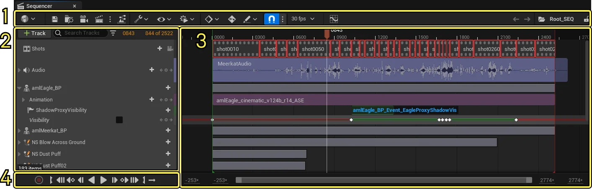
| Track | Dùng cho |
|---|---|
| Camera Cuts Track | Cắt camera — spine của mọi cinematic |
| Transform Track | Di chuyển Actor theo keyframe |
| Cine Camera Actor | Camera phim — chỉnh focal length, focus, aperture |
| Track Event | Gọi event Blueprint tại thời điểm phim (nổ, mở cửa) |
| Subscene Track | Lồng sequence trong sequence |
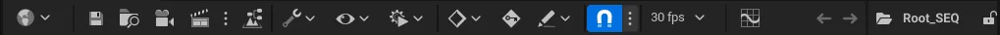
Phát cutscene trong game
Level Blueprint: node Play trên Level Sequence Actor reference →disable input player trong lúc chạy, xong enable lại. Muốn tương tác đầu game (logo studio): thêm sequence ở map đầu + Delay.
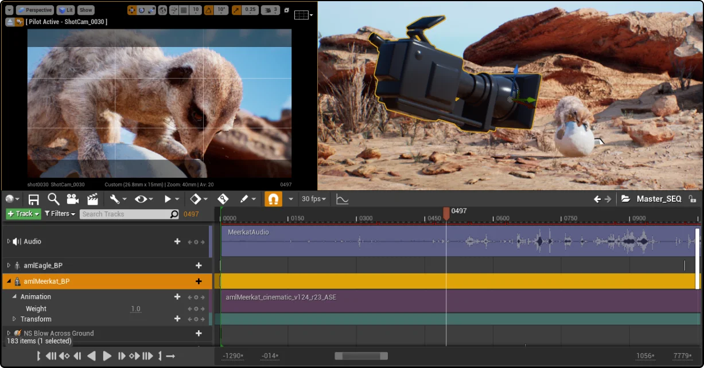
Làm intro 8 giây: 1 Level Sequence với 3 Cine Camera (toàn cảnh → trung cảnh → cận coin), transform camera bay nhẹ, kết thúc bằng Track Event gọi Blueprint đặt player vào vị trí spawn. Gọi sequence từ Level Blueprint khi BeginPlay.
📚 Xem docs đầy đủ: Cinematics and Sequencer · Sequencer Editor · Sequencer Basics
Chương 18 Packaging — Đóng gói game
Từ project thành file .exe gửi bạn bè — và checklist trước khi ship.
Packaging là gì?
Packaging nén project: cook assets (chuyển sang format nền tảng đích), compile code, tạo executable. Vào Platforms → Windows → Package Project. Kết quả: thư mục Windows/ chứa MyGame.exe + MyGame/Paks/*.pak.
Build Configuration
| Configuration | Dùng khi |
|---|---|
| Debug / DebugGame | Dev debug code chậm nhất, đầy đủ symbol |
| Development | Ngày thường test — console command chạy được |
| Test | QA — như Development nhưng cho tester, không cheat |
| Shipping | Phát hành — nhanh nhất, strip debug/console |
Checklist trước khi ship
🚢 Pre-flight checklist
1. Lumen dùng cơ chế nào tính GI nhanh?
2. Muốn UI co giãn đúng mọi độ phân giải?
3. Configuration nào dành cho bản phát hành?
4. Muốn AI tự tìm đường tránh vật cản, map cần có gì?
5. Blackboard trong hệ AI là gì?
📚 Xem docs đầy đủ: Packaging Unreal Engine Projects · Packaging and Shipping · Build Configurations Reference
Chương 19 Lập trình C++ trong UE
Nâng gameplay lên tốc độ C++ — và phối hợp Blueprint/C++ đúng chuẩn Epic.
Chuẩn bị công cụ
Cần Visual Studio 2022 (Windows) + workload Game development with C++, hoặc Xcode (macOS), hoặc clang/gcc (Linux). Tạo project chọn template C++, hoặc thêm class C++ vào project Blueprint có sẵn (Tools → New C++ Class). Lần đầu compile sẽ chậm — UE generate project files.
Gameplay Framework — bộ khung lớp
| Lớp | Vai trò |
|---|---|
| UObject | Tổ tiên mọi object — garbage collection, reflection |
| AActor | Đặt được vào level, có lifecycle (BeginPlay/Tick/EndPlay) |
| UActorComponent | Phục vụ Actor: movement, health, audio… |
| APawn / ACharacter | Điều khiển được / có CAPSULE + movement + mesh |
| APlayerController | Sinh mệnh của player: input, camera, HUD |
| AGameModeBase | Luật match: pawn class nào, player controller nào |
Actor C++ đầu tiên
UCLASS() // macro reflection — bắt buộc cho mọi U-class class MYGAME_API APickup : public AActor { GENERATED_BODY() public: APickup(); UPROPERTY(EditAnywhere, BlueprintReadWrite, Category="Pickup") int32 CoinValue = 10; // hiện trong editor + Blueprint đọc/ghi được UFUNCTION(BlueprintCallable) void Collect(); // gọi được từ Blueprint virtual void BeginPlay() override; virtual void Tick(float DeltaSeconds) override; };
Ba macro linh hồn của UE: UCLASS/USTRUCT (đăng ký class), UPROPERTY (expose biến ra editor/Blueprint/GC/save), UFUNCTION (gọi từ Blueprint, RPC network). Không có macro → C++ thường, engine "không thấy".
C++ & Blueprint — ai làm gì?
- Quy tắc Epic: hệ thống lõi, tính toán nặng → C++; designer tinh chỉnh, assemble gameplay, rapid prototype → Blueprint.
- C++ expose qua
BlueprintReadWrite / BlueprintCallable / BlueprintNativeEvent— Blueprint override hành vi mà không cần recompile. - Class C++ kế thừa thành Blueprint class (right-click class trong editor) — biến thành "prefab có logic".
Viết APickup C++ hoàn chỉnh: UStaticMeshComponent (SetStaticMesh trong constructor bằng ConstructorHelpers), UBoxComponent overlap, hàm Collect() gọi DestroyActor và broadcast delegate. Kế thừa thành BP_CoinCpp, đặt vào level so tốc độ với BP_Coin thuần ở Ch4.
📚 Xem docs đầy đủ: Set Up and Compile Your Project · Programming with C++ · C++ and Blueprints · Game Mode and Game State
Chương 20 Material nâng cao
Material Functions, Dynamic Material Instances, World Position Offset — material "biết suy nghĩ".
Material Layers & Functions
Material Function là node tái sử dụng (ví dụ hàm "chi tiết ẩm ướt" dùng chung mọi material). Material Layers + Blends (5.x) cho vật liệu ghép tầng như Photoshop: layer đá + blend rêu + layer ẩm.
Dynamic Material Instance — đổi màu lúc runtime
Event OnEquip → Create Dynamic Material Instance (Mesh, Parent = M_Weapon) → Set Vector Parameter Value (ParamName = "Tint", Value = màu cam)
MID (Material Instance Dynamic) tạo runtime — mỗi bản copy có parameter riêng (đỏ cho player 1, xanh player 2). Đây là kỹ thuật mọi game dùng cho tint/trắng-đen trạng thái/flash sát thương.
WPO — World Position Offset
World Position Offset dịch vertex trong shader: cỏ lay gió, cờ phấp phới, vật "thở". Kết hợp Time + TextureCoordinate + sin → hiệu ứng chất lượng với chi phí gần 0.
Làm material kiếm phát sáng theo độ "sạc": parameter EmissiveIntensity (0–10). Làm MID đổi intensity theo biến Energy của character (0 khi hết năng lượng). Thêm WPO rung nhẹ khi intensity > 5.
📚 Xem docs đầy đủ: Expanded Material Instances · Utility Material Expressions · Material Instances
Chương 21 World Partition & Open World
Map 16 km² không chết hiệu năng — streaming thế hệ mới của UE5.
World Partition là gì?
Thay "nhiều sub-level chèn tay", World Partition chia map thành lưới ô (grid cells) tự load/unload theo khoảng cách camera. Mỗi ô là một file riêng trên đĩa (One File Per Actor — OFPA) — team nhiều người làm chung map không giẫm chân nhau.
| Khái niệm | Ý nghĩa |
|---|---|
| Grid | Lưới cell + khoảng cách load (Loading Range) theo runtime grid |
| Data Layer | Bật/tắt nhóm actor theo ngữ cảnh (mùa, cốt truyện, day/night) |
| HLOD | Hierarchical LOD — vùng xa gom thành mesh 1 cục nhẹ nhàng |
| External Actors | Actor lưu file riêng ngoài map — merge/Git thân thiện |
Bật và cấu hình
Project mới: template có sẵn (Open World). Project cũ: File → Convert Project… hoặc tạo map mới tick Enable World Partition. Vào World Settings → World Partition chỉnh cell size + Loading Range. Mở panel World Partition (Window → World Partition) xem lưới, kéo riêng ô nào để force-load khi chỉnh.
Set Data Layer State (chỉ server trong multiplayer). Cẩn thận: actor thuộc nhiều layer chỉ hiện khi tất cả layer bật.
Tạo map Open World mới 4×4 km, đặt 3 khu (làng/rừng/đỉnh núi) cách nhau >1 km. Cấu hình 2 runtime grid: chính 256 m range 2 km; phụ (HLOD) range 10 km. Bay camera kiểm chứng vùng xa chỉ hiện HLOD (xem bằng stat streaming).
📚 Xem docs đầy đủ: World Partition · World Partition - Data Layers · World Partition - Hierarchical Level of Detail
Chương 22 Nanite — Virtualized Geometry
Nhập model hàng trăm triệu tam giác — engine tự lo mức chi tiết.
Nanite làm được gì?
Nanite là geometry ảo hóa: mesh gốc chia nhỏ cluster, GPU chỉ vẽ những cluster đủ nhỏ trên màn hình — ZoomOut hàng tỷ tam giác vẫn mượt. Nghệ 3D scan, ZBrush sculpt khủng nhập thẳng không cần decimate. Đổi lại: tốn disk/VRAM hơn, không hỗ trợ vài feature (skinning phiên bản cũ, vertex deformation phức tạp).
| Nên bật Nanite | Không nên |
|---|---|
| Đá/tường/địa hình tách chi tiết cao | Mesh nhân vật dùng morph target cũ |
| Foliage tán cây (tán lá thật) | Mesh quá nhỏ/simple (cube, khuôn) |
| Prop scan 3D, kitbash | Translucent phức tạp cần custom material path |
Bật thế nào
- Import: tick Build Nanite Mesh; hoặc mở Static Mesh → Details → Nanite Settings → Allow Nanite rồi Apply.
- Viewport hiển thị Nanite: Show → Nanite. Kiểm tra overload: console
r.Nanite 0/1so sánh. - Nanite Foliage (5.6+): tán cây gió vẫn Nanite — kết hợp Ch10.
- Nanite Assemblies: ghép nhiều mesh thành assembly dùng chung instance — giảm draw call kitbash.
stat gpu chứ đừng tin cảm giác.
Lấy 1 mesh ZBrush/sketchfab triệu polygon: import 2 bản (Nanite on/off). Đặt cạnh nhau, chạy stat unit + stat gpu so frame time khi camera bay gần-xa. Ghi kết luận riêng của bạn.
📚 Xem docs đầy đủ: Nanite Virtualized Geometry Overview · Nanite Technical Details · Working with Nanite-Enabled Content
Chương 23 PCG — Procedural Content Generation
Vẽ rừng, rải đá, dựng thành phố bằng graph — không đặt tay từng cái.
PCG Framework
PCG là node graph procedural: input points → filter/sampler/transform → spawn mesh/actor. Ngôn ngữ dựng cảnh của level designer thời đại mới, tích hợp sẵn 5.4+. Toàn bộ hoạt động trong editor lẫn runtime, cache từng node.
| Node tiêu biểu | Chức năng |
|---|---|
| Surface Sampler | Rải điểm lên bề mặt (landscape/mesh) |
| Density Filter | Lọc điểm theo mật độ/thứ hạng |
| Attribute Noise | Thêm nhiễu tự nhiên vào thuộc tính điểm |
| Static Mesh Spawner | Sinh mesh tại các điểm |
| Bounds Breaker / Difference | Tách/từ điểm theo vùng |
PCG đầu tiên: rừng thông trên slope
- Đặt PCG Volume phủ landscape (hoặc chọn landscape làm input).
- Graph:
Get Landscape Data → Surface Sampler (mật độ 1/25 m²). Density Filtergiữ slope < 40° (bằng node slope từ landscape) + height trong khoảng cho phép.Attribute Noisephá đều,Transform Pointsscale random 0.7–1.3, rotate random Z.Static Mesh Spawner→ SM_Pine (Nanite). Xem rừng sinh ngay trong viewport.
Nâng rừng trên: thêm 2 loại mesh (thông + đá) với weight khác nhau theo noise, và "clearing" trống quanh 1 điểm Player Start (dùng Difference với sphere 20 m).
📚 Xem docs đầy đủ: Procedural Content Generation Overview · PCG Editor Mode · Using PCG with World Partition
Chương 24 Networking & Multiplayer
Hai máy cùng một thế giới — replication, authority, RPC.
Mô hình Server–Client
UE dùng mô hình server authoritative: Server nắm sự thật (hp, vị trí, điểm), Client gửi ý định (input), nhận kết quả. Kiểu play trong editor: Play As Client + Server (2+ cửa sổ) — test multiplayer không cần build.
| Khái niệm | Ý nghĩa |
|---|---|
| Authority | Actor/máy nắm quyền quyết định giá trị |
| Replication | Đồng bộ biến/Actor từ server xuống client |
| RepNotify | Biến replicate + gọi hàm OnRep ở client khi đổi |
| RPC | Gọi hàm từ xa: Server RPC (client→server), Client RPC, NetMulticast |
| Relevancy | Actor này có cần gửi cho client kia không (net cull distance) |
Replication trong Blueprint
// Biến: Health (Float) — Replicated + RepNotify (OnRep_Health) // Event: ApplyDamage (chỉ chạy trên Server — check node "Authority") Authority: Health -= Damage → (replicate tự động xuống client) OnRep_Health (mỗi client): update HUD bar // Server RPC từ client muốn bắn: Client: CallServerFire (Run on Server) → Authority xác minh → Spawn projectile
Quy tắc vàng: client không bao giờ tự quyết — mọi thay đổi quan trọng qua Server RPC, replicate kết quả về. Cheating 101: không tin client.
Mở Play As Client 2 cửa sổ. Làm BP_Coin multiplayer-an toàn: chỉ Server xử lý overlap (Switch Has Authority), DestroyActor server-side, điểm replicate. Kiểm tra: 2 player nhặt cùng coin → chỉ 1 ăn được.
📚 Xem docs đầy đủ: Network Multiplayer Basics · Multiplayer Programming Quick Start · Networking and Multiplayer
Chương 25 Tối ưu hiệu năng
Đo trước — tối ưu sau. Profiling là kỹ năng tách pro khỏi amateur.
Ba câu lệnh console phải thuộc
| Lệnh | Cho thấy |
|---|---|
stat fps | Frames/giây + frame time (ms) — 16.6 ms = 60 FPS |
stat gpu | GPU pass nào ăn thời gian (base pass, shadow, Lumen…) |
stat unit | Game thread vs Draw vs GPU vs RHIT — tìm thread cổ chai |
Công thức: FPS do thread chậm nhất quyết định. Game thread cao → logic Blueprint/C++ nặng; GPU cao → ánh sáng/Nanite/overdraw; Draw calls nhiều → mesh nhỏ lẻ, thiếu instancing.
Unreal Insights
Unreal Insights (chuột phải project → Trace) ghi timeline mọi thread, cookie từng hàm, GPU timings. Mở file .utrace xem chính frame nào, hàm nào giết frame. Kết hợp Lyra/Mixer sample để học cách game thật cấu hình.
Scalability — một game, nhiều cấu hình
Scalability Settings (settings engine group) auto theo máy: Low/Medium/High/Epic — chỉnh số đèn Lumen, Nanite density, shadow, AA. Editor: Settings → Engine Scalability Settings; runtime: node/console sg.PostProcessQuality 2. Bảng tham chiếu đầy đủ mỗi quality chỉnh gì nằm trong docs.
stat unit tìm cổ chai → (2) GPU nặng: giảm đèn Movable, kiểm tra Lumen quality, Nanite thay LOD → (3) Game thread: tắt Tick không cần (Event Tick = gánh nặng), bỏ logic trong Tick chu kỳ → (4) Draw calls: merge mesh, instance foliage, HLOD vùng xa → (5) Test trên máy thật mục tiêu.
Trong map CoinRush: ghi FPS/GPU ms ở 3 spot (đồng cỏ, rừng cây, trong nhà nhiều đèn). Tìm spot tệ nhất, sửa 1 thứ (xóa 2 đèn / giảm foliage / sg quality) và ghi lại cải thiện. Viết báo cáo 5 dòng — thói quen của team chuyên nghiệp.
📚 Xem docs đầy đủ: Unreal Insights · Scalability Reference · Optimizing and Debugging Projects for Real-Time Rendering
Chương 26 Lộ trình tiếp theo
Bạn đã có nền — giờ đi theo nhánh nào của Unreal.
Bốn hướng chuyên sâu
| Hướng | Học gì tiếp (đều có trong mirror) |
|---|---|
| 🎮 Gameplay Programmer | Gameplay Ability System (GAS), Enhanced Input, AI (Behavior Tree, State Tree), Physics |
| 🎨 Tech Artist | Material domain Post Process, Shaders, Niagara nâng cao, Mesh Paint, Motion Design |
| 🌍 Level / World Designer | PCG nâng cao, Water system, VFX climate, Landscape layer scripts |
| 🎬 Cinematics / Virtual Production | Movie Render Queue, Virtual Cameras, DMX, Switchboard, Live Link |
Học từ project mẫu của Epic
- Lyra Starter Game — gameplay framework chuẩn GAS, multiplayer shooter đầy đủ.
- Valley of the Ancient — demo Lumen/Nanite/vfx nguyên bản UE5.
- City Sample — open world + Matrix Awakens, traffic/crowd PCG.
- Content Examples — map "bảo tàng" từng tính năng, comment sẵn trong map.
Tất cả có trong Fab (marketplace) miễn phí, và nhiều tutorial series (path "Puzzle Adventure" mà khóa này mượn ảnh) nằm sẵn trong mirror.
Thói quen để lên advanced thật sự
- Đọc docs gốc — mirror này có 3.644 trang, dùng search box.
- Mỗi tuần một mechanic nhỏ: grappling hook, inventory, save system — publish lên itch.io.
- Đo mọi thứ — Insights trước khi "tối ưu bằng cảm giác".
- Đọc source — UE mở mã nguồn: tra Actor.cpp khi thắc mắc lifecycle.
1. Vì sao Nanite cho phép mesh triệu polygon?
2. Client muốn bắn đạn — làm đúng cách?
3. Frame time 33 ms nhưng GPU chỉ 8 ms — vấn đề nằm đâu?
FC Flashcards thuật ngữ
Bấm vào card để lật. Ôn trước phỏng vấn hoặc trước khi mở docs.
🗺 Bản đồ lộ trình
Tổng thể khóa học — in ra dán cạnh màn hình.
| Level | Chương | Kỹ năng đạt được | Dự án chứng minh |
|---|---|---|---|
| 1 · Starter | 1–8 | Editor, Actor/Component, Blueprint cơ bản, import, material, lighting cơ bản, Enhanced Input & SaveGame | Mini game Coin Rush |
| 2 · Intermediate | 9–18 | Lumen, landscape/foliage, physics, AI cơ bản, audio, VFX, animation, UI, cinematic, packaging | Open playground hoàn chỉnh + .exe chạy được |
| 3 · Advanced | 19–26 | C++ framework, material dynamic, world partition, Nanite, PCG, multiplayer, profiling | Vertical slice open world nhỏ, multiplayer 2 máy |